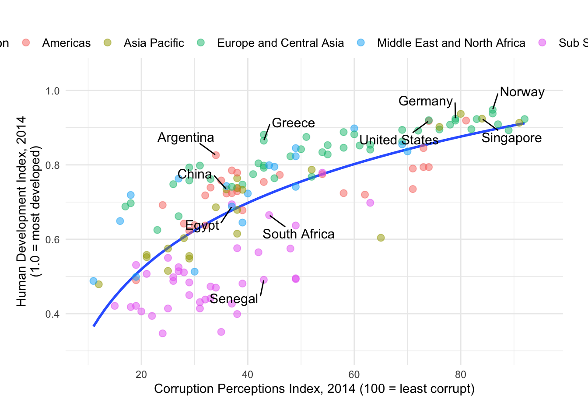
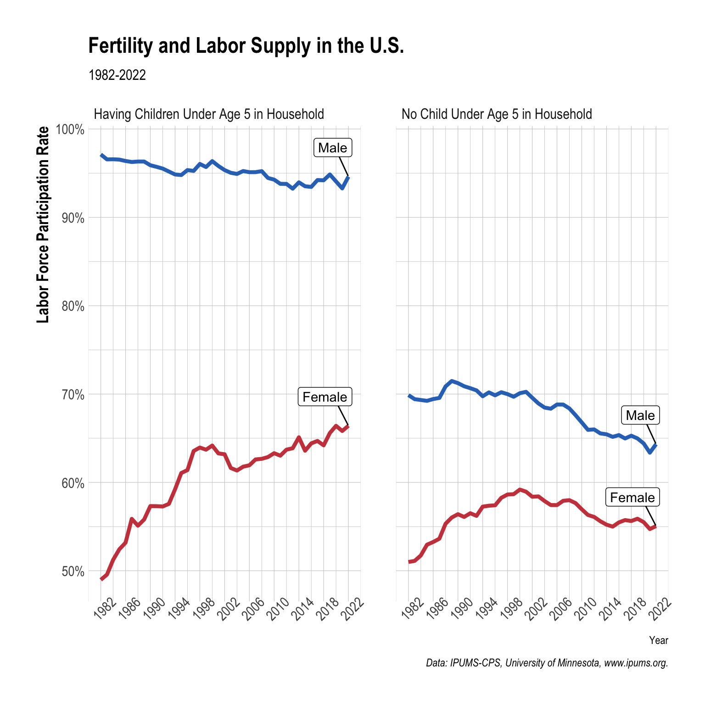
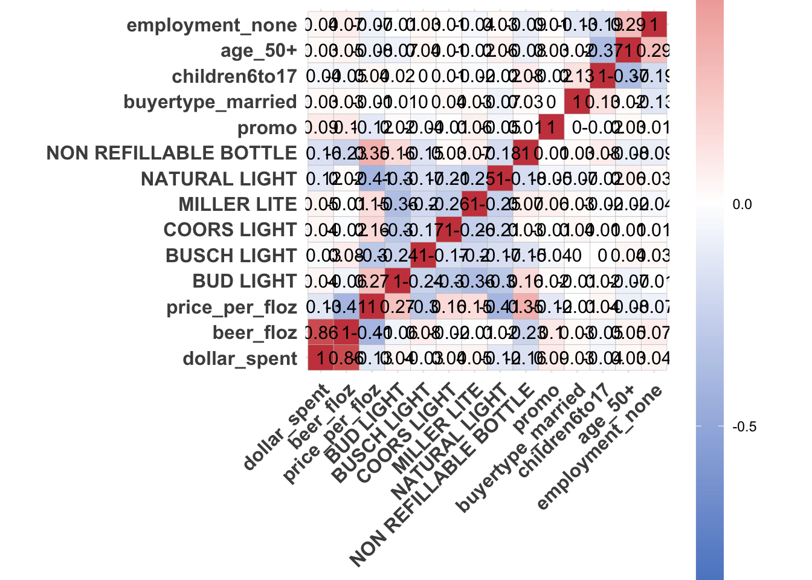
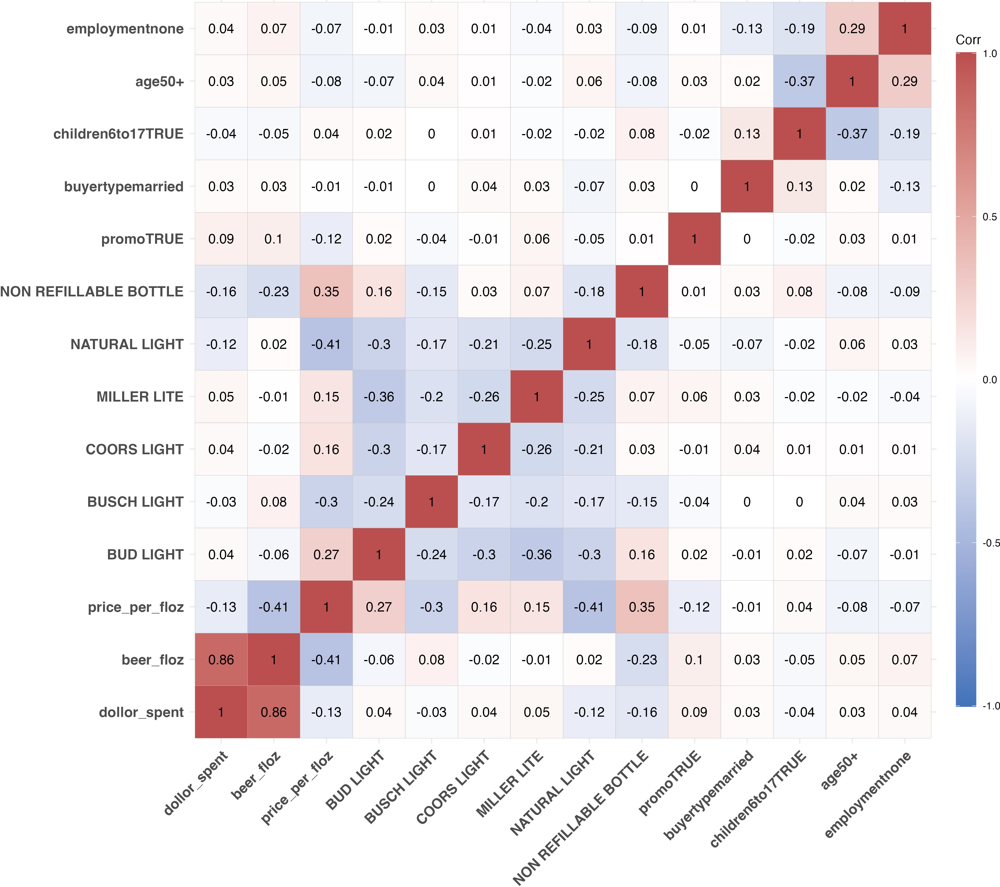
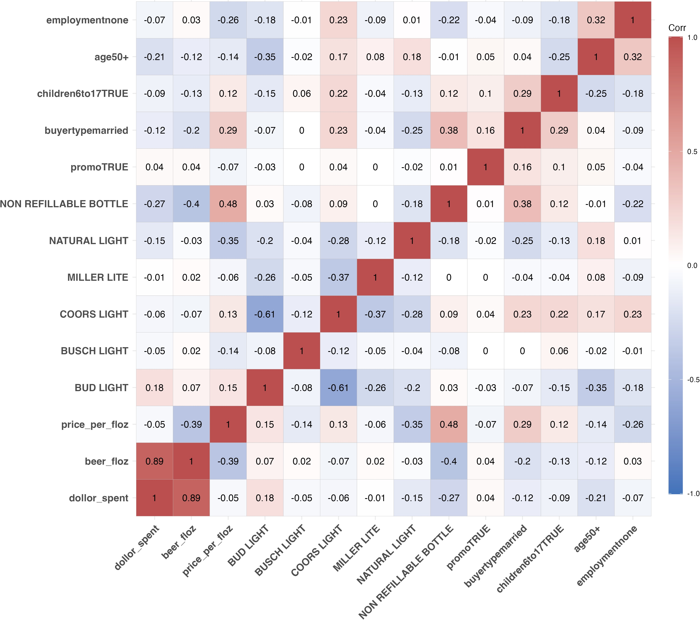

hdi_corruption <- read_csv(
'https://bcdanl.github.io/data/hdi_corruption.csv')DANL 310: Data Visualization and Presentation
Homework Assignment 2
Question 1
Add a web-page of the project proposal to your website.
Question 2
Provide ggplot codes to replicate the given figure.
Q2a.
Use the following data.frame for Q2a, Q2b, and Q2c.
hdi_corruption <- read_csv(
'https://bcdanl.github.io/data/hdi_corruption.csv')
# Use geom_smooth(method = lm, formula = "y ~ log(x)", se = F) .
# `box.padding` option would be useful for geom_text_repel().
country_highlight <- c("Germany", "Norway", "United States",
"Greece", "Singapore",
"Argentina", "Senegal",
"China", "Egypt", "South Africa")
corruption <- hdi_corruption %>%
mutate(label = ifelse(country %in% country_highlight, country, NA))
ggplot(data = filter(corruption, year == 2014), aes(cpi, hdi)) +
geom_smooth(method = lm, formula = "y ~ log(x)", se = F) +
geom_point(
aes(color = region, fill = region),
size = 2.5, alpha = 0.5, shape = 21
) +
geom_text_repel(
aes(label = label), color = "black", size = 4,
box.padding = .75
) +
scale_y_continuous(
limits = c(0.3, 1.05), breaks = c(0.2, 0.4, 0.6, 0.8, 1.0),
name = "Human Development Index, 2014\n(1.0 = most developed)"
) +
scale_x_continuous(
limits = c(10, 95),
breaks = c(20, 40, 60, 80, 100),
name = "Corruption Perceptions Index, 2014 (100 = least corrupt)"
) +
theme_minimal() +
theme(
plot.margin = unit( c(1.75, .75, .75, .5), "cm"),
legend.position = c(.5, 1.05),
legend.direction = "horizontal",
legend.text = element_text(size = 10)
) +
labs( color = "Region", fill = "Region") 
Q2b
Download the file
labor_supply.zipfrom the Google Drive. Then, extractlabor_supply.zip, so that you can access thelabor_supply.csvfile.Variable description in
labor_supply.csvSEX: 1 if Male; 2 if Female; 9 if NIU (Not in universe)NCHLT5: Number of own children under age 5 in a household; 9 if 9+LABFORCE: 0 if NIU or members of the armed forces; 1 if not in the labor force; 2 if in the labor force.ASECWT: sample weight
A sample weight of each observation means how much population each observation represents.
- If you sum
ASECWTfor each year, you get the size of yearly population in the US.
- If you sum
Households with
LABFORCE == 0is not in labor force.Labor force participation rate can be calculated by:
\[ (\text{Labor Force Participation Rate}) \, = \, \frac{(\text{Size of population in labor force})}{(\text{Size of civilian population that are not members of the armed force})} \]
path <- '/Users/bchoe/My Drive/suny-geneseo/teaching-materials/lecture-data/labor_supply.csv'
cps_labor <- read_csv(path)
cps_labor <- cps_labor %>%
filter(YEAR >= 1982) %>%
filter(LABFORCE != 0) %>%
mutate(LABFORCE = LABFORCE - 1) %>%
mutate(labor_supply = LABFORCE * ASECWT,
child = ifelse(NCHLT5 == 0,
"No Child Under Age 5 in Household",
"Having Children Under Age 5 in Household")) %>%
group_by(YEAR, SEX, child) %>%
summarize(pct = sum(labor_supply) / sum(ASECWT, na.rm= T) ) %>%
filter(!is.na(child))
label_df <- filter(cps_labor, YEAR == 2022) %>%
mutate(label = ifelse(SEX == 1, "Male", "Female"))
ggplot(data = cps_labor,
aes(x = YEAR, y = pct,
color = factor(SEX))) +
geom_line(size = 1.5) +
geom_label_repel(data = label_df,
aes(x = YEAR, y = pct, label = label),
color = 'black',
nudge_y = .033, box.padding = .5) +
facet_grid( . ~ factor(child)) +
scale_x_continuous( breaks = seq(1982, 2022, 4) ) +
scale_y_continuous( labels = scales::percent) +
scale_color_manual( labels = c("Male", "Female"),
values = c("#2E74C0", "#CB454A") ) +
labs(x = "Year",
y = "Labor Force Participation Rate",
color = "Gender",
lty = "Young Children",
title = "Fertility and Labor Supply in the U.S.",
subtitle = "1982-2022",
caption = "Data: IPUMS-CPS, University of Minnesota, www.ipums.org.") + guides(color = "none") +
theme_ipsum() +
theme(axis.title.y = element_text(size = rel(1.5),
face = 'bold'),
axis.text.x = element_text(angle = 45))
Q2c
library(ggcorrplot) # to create correlation heatmaps using ggcorrplot()
beer_mkt <- read_csv('https://bcdanl.github.io/data/beer_markets.csv')- Make a correlation heat-map with variables that are either strongly correlated or
promo-related. - The variables are selected by how high the mean value of the absolute value of correlations with the variable is (top 13-15 variables).
- You can start with the data.frame,
beer_dummies:
beer_dummies <- beer_mkt %>% select(-hh, -market)
reg <- lm(data = beer_dummies,
beer_floz ~ .)
beer_dummies <- as.data.frame(model.matrix(reg))[, -1]
beer_dummies <- cbind(beer_mkt$beer_floz ,beer_dummies)
beer_dummies <- beer_dummies %>%
rename(beer_floz = `beer_mkt$beer_floz`)library(tidyverse)
library(ggfortify) # to create regression-related plots
library(ggcorrplot) # to create correlation heatmaps
library(fastDummies) # to create dummy variables
beer_mkt <- read.csv('https://bcdanl.github.io/data/beer_markets.csv')
results <- fastDummies::dummy_cols(beer_mkt %>% select(-hh, -market) )
colnames(results) [1] "X_purchase_desc"
[2] "quantity"
[3] "brand"
[4] "dollar_spent"
[5] "beer_floz"
[6] "price_per_floz"
[7] "container"
[8] "promo"
[9] "buyertype"
[10] "income"
[11] "childrenUnder6"
[12] "children6to17"
[13] "age"
[14] "employment"
[15] "degree"
[16] "cow"
[17] "race"
[18] "microwave"
[19] "dishwasher"
[20] "tvcable"
[21] "singlefamilyhome"
[22] "npeople"
[23] "X_purchase_desc_BUD LT BR CN"
[24] "X_purchase_desc_BUD LT BR CN 3P"
[25] "X_purchase_desc_BUD LT BR CN 4P"
[26] "X_purchase_desc_BUD LT BR CN 6P"
[27] "X_purchase_desc_BUD LT BR CN 8P"
[28] "X_purchase_desc_BUD LT BR CN 9P"
[29] "X_purchase_desc_BUD LT BR CN 12P"
[30] "X_purchase_desc_BUD LT BR CN 15P"
[31] "X_purchase_desc_BUD LT BR CN 18P"
[32] "X_purchase_desc_BUD LT BR CN 20P"
[33] "X_purchase_desc_BUD LT BR CN 24P"
[34] "X_purchase_desc_BUD LT BR CN 30P"
[35] "X_purchase_desc_BUD LT BR CN 36P"
[36] "X_purchase_desc_BUD LT BR CN F-V 18P"
[37] "X_purchase_desc_BUD LT BR KG"
[38] "X_purchase_desc_BUD LT BR KG 1/2"
[39] "X_purchase_desc_BUD LT BR NRB"
[40] "X_purchase_desc_BUD LT BR NRB 4P"
[41] "X_purchase_desc_BUD LT BR NRB 6P"
[42] "X_purchase_desc_BUD LT BR NRB 8P"
[43] "X_purchase_desc_BUD LT BR NRB 12P"
[44] "X_purchase_desc_BUD LT BR NRB AL"
[45] "X_purchase_desc_BUD LT BR NRB AL 4P"
[46] "X_purchase_desc_BUD LT BR NRB AL 15P"
[47] "X_purchase_desc_BUD LT BR NRB AL 24P"
[48] "X_purchase_desc_BUD LT BR NRB LN"
[49] "X_purchase_desc_BUD LT BR NRB LN 6P"
[50] "X_purchase_desc_BUD LT BR NRB LN 12P"
[51] "X_purchase_desc_BUD LT BR NRB LN 15P"
[52] "X_purchase_desc_BUD LT BR NRB LN 18P"
[53] "X_purchase_desc_BUD LT BR NRB LN 20P"
[54] "X_purchase_desc_BUD LT BR NRB LN 24P"
[55] "X_purchase_desc_BUD LT BR NRBP 6P"
[56] "X_purchase_desc_BUD LT BR NRBP 24P"
[57] "X_purchase_desc_BUD LT BR NRBP LN"
[58] "X_purchase_desc_BUD LT BR RB LN"
[59] "X_purchase_desc_BUD LT BR RB LN 12P"
[60] "X_purchase_desc_BUD LT DFT BR KG BALL"
[61] "X_purchase_desc_BUSCH LIGHT BR CN"
[62] "X_purchase_desc_BUSCH LIGHT BR CN 4P"
[63] "X_purchase_desc_BUSCH LIGHT BR CN 6P"
[64] "X_purchase_desc_BUSCH LIGHT BR CN 12P"
[65] "X_purchase_desc_BUSCH LIGHT BR CN 18P"
[66] "X_purchase_desc_BUSCH LIGHT BR CN 24P"
[67] "X_purchase_desc_BUSCH LIGHT BR CN 30P"
[68] "X_purchase_desc_BUSCH LIGHT BR KG"
[69] "X_purchase_desc_BUSCH LIGHT BR NRB"
[70] "X_purchase_desc_BUSCH LIGHT BR NRB LN"
[71] "X_purchase_desc_BUSCH LIGHT BR NRB LN 6P"
[72] "X_purchase_desc_BUSCH LIGHT BR NRB LN 12P"
[73] "X_purchase_desc_BUSCH LIGHT BR NRB LN 18P"
[74] "X_purchase_desc_BUSCH LIGHT BR NRB LN 20P"
[75] "X_purchase_desc_BUSCH LIGHT BR NRB LN 24P"
[76] "X_purchase_desc_CRS LT BR CN"
[77] "X_purchase_desc_CRS LT BR CN 6P"
[78] "X_purchase_desc_CRS LT BR CN 12P"
[79] "X_purchase_desc_CRS LT BR CN 18P"
[80] "X_purchase_desc_CRS LT BR CN 24P"
[81] "X_purchase_desc_CRS LT BR CN 30P"
[82] "X_purchase_desc_CRS LT BR CN 36P"
[83] "X_purchase_desc_CRS LT BR CN C-B 36P"
[84] "X_purchase_desc_CRS LT BR CN FBL 24P"
[85] "X_purchase_desc_CRS LT BR KG"
[86] "X_purchase_desc_CRS LT BR KG 1/2"
[87] "X_purchase_desc_CRS LT BR KG BALL"
[88] "X_purchase_desc_CRS LT BR NRB"
[89] "X_purchase_desc_CRS LT BR NRB LN"
[90] "X_purchase_desc_CRS LT BR NRB LN 6P"
[91] "X_purchase_desc_CRS LT BR NRB LN 12P"
[92] "X_purchase_desc_CRS LT BR NRB LN 18P"
[93] "X_purchase_desc_CRS LT BR NRB LN 20P"
[94] "X_purchase_desc_CRS LT BR NRB LN 24P"
[95] "X_purchase_desc_CRS LT BR NRBP LN"
[96] "X_purchase_desc_CRS LT BR NRBP LN INSLT-B 6P"
[97] "X_purchase_desc_CRS LT BR NRBP LN INSLT-B 18P"
[98] "X_purchase_desc_CRS LT LB BR NRB"
[99] "X_purchase_desc_MLR LITE BR CN"
[100] "X_purchase_desc_MLR LITE BR CN 2P"
[101] "X_purchase_desc_MLR LITE BR CN 4P"
[102] "X_purchase_desc_MLR LITE BR CN 6P"
[103] "X_purchase_desc_MLR LITE BR CN 12P"
[104] "X_purchase_desc_MLR LITE BR CN 18P"
[105] "X_purchase_desc_MLR LITE BR CN 24P"
[106] "X_purchase_desc_MLR LITE BR CN 30P"
[107] "X_purchase_desc_MLR LITE BR CN 36P"
[108] "X_purchase_desc_MLR LITE BR KG 1/2"
[109] "X_purchase_desc_MLR LITE BR KG 1/4"
[110] "X_purchase_desc_MLR LITE BR NRB"
[111] "X_purchase_desc_MLR LITE BR NRB 8P"
[112] "X_purchase_desc_MLR LITE BR NRB 24P"
[113] "X_purchase_desc_MLR LITE BR NRB AL 9P"
[114] "X_purchase_desc_MLR LITE BR NRB LN"
[115] "X_purchase_desc_MLR LITE BR NRB LN 6P"
[116] "X_purchase_desc_MLR LITE BR NRB LN 18P"
[117] "X_purchase_desc_MLR LITE BR NRB LN 20P"
[118] "X_purchase_desc_MLR LITE BR NRB LN 24P"
[119] "X_purchase_desc_MLR LITE BR NRB LN F-P 12P"
[120] "X_purchase_desc_MLR LITE BR NRBP"
[121] "X_purchase_desc_MLR LITE BR NRBP LN 6P"
[122] "X_purchase_desc_MLR LITE BR NRBP LN 24P"
[123] "X_purchase_desc_MLR LITE BR NRBP LN ES-C 24P"
[124] "X_purchase_desc_NATURAL LT BR CN"
[125] "X_purchase_desc_NATURAL LT BR CN 3P"
[126] "X_purchase_desc_NATURAL LT BR CN 4P"
[127] "X_purchase_desc_NATURAL LT BR CN 6P"
[128] "X_purchase_desc_NATURAL LT BR CN 12P"
[129] "X_purchase_desc_NATURAL LT BR CN 18P"
[130] "X_purchase_desc_NATURAL LT BR CN 24P"
[131] "X_purchase_desc_NATURAL LT BR CN 30P"
[132] "X_purchase_desc_NATURAL LT BR NRB"
[133] "X_purchase_desc_NATURAL LT BR NRB 12P"
[134] "X_purchase_desc_NATURAL LT BR NRB LN"
[135] "X_purchase_desc_NATURAL LT BR NRB LN 6P"
[136] "X_purchase_desc_NATURAL LT BR NRB LN 12P"
[137] "X_purchase_desc_NATURAL LT BR NRB LN 20P"
[138] "brand_BUD LIGHT"
[139] "brand_BUSCH LIGHT"
[140] "brand_COORS LIGHT"
[141] "brand_MILLER LITE"
[142] "brand_NATURAL LIGHT"
[143] "container_CAN"
[144] "container_KEG"
[145] "container_KEG BALL"
[146] "container_NON REFILLABLE BOTTLE"
[147] "container_NON REFILLABLE BOTTLE ALUMINUM"
[148] "container_NON REFILLABLE BOTTLE PLASTIC"
[149] "container_REFILLABLE BOTTLE"
[150] "buyertype_female"
[151] "buyertype_male"
[152] "buyertype_married"
[153] "income_20-60k"
[154] "income_60-100k"
[155] "income_100-200k"
[156] "income_200k+"
[157] "income_under20k"
[158] "age_<30"
[159] "age_30-39"
[160] "age_40-49"
[161] "age_50+"
[162] "employment_full"
[163] "employment_none"
[164] "employment_part"
[165] "degree_College"
[166] "degree_Grad"
[167] "degree_HS"
[168] "degree_none"
[169] "cow_clerical/sales/service"
[170] "cow_labor/craft/military/farm"
[171] "cow_none/retired/student"
[172] "cow_prof"
[173] "race_asian"
[174] "race_black"
[175] "race_hispanic"
[176] "race_other"
[177] "race_white"
[178] "tvcable_basic"
[179] "tvcable_none"
[180] "tvcable_premium"
[181] "npeople_1"
[182] "npeople_2"
[183] "npeople_3"
[184] "npeople_4"
[185] "npeople_5plus" results <- results %>%
select(dollar_spent,
beer_floz,
price_per_floz,
starts_with("brand_"),
`container_NON REFILLABLE BOTTLE`,
starts_with("promo"),
buyertype_married,
children6to17,
`age_50+`,
employment_none) %>%
mutate(promo = as.integer(promo),
children6to17 = as.integer(children6to17)) %>%
rename(`NON REFILLABLE BOTTLE` = `container_NON REFILLABLE BOTTLE`)
colnames(results) <- str_replace_all(colnames(results),
"brand_", "")
colnames(results) [1] "dollar_spent" "beer_floz" "price_per_floz"
[4] "BUD LIGHT" "BUSCH LIGHT" "COORS LIGHT"
[7] "MILLER LITE" "NATURAL LIGHT" "NON REFILLABLE BOTTLE"
[10] "promo" "buyertype_married" "children6to17"
[13] "age_50+" "employment_none" cor_beer <- cor(results)
class(cor_beer)[1] "matrix" "array" cor_beer <- as.data.frame(cor_beer)p <- ggcorrplot( cor_beer, lab = T,
colors = c("#2E74C0", "white", "#CB454A"),
) +
theme(axis.text = element_text(size = rel(1.5),
face = 'bold')) +
guides(fill = guide_colourbar(barheight = 38.5))
p
- To calculate a correlation between numeric variables in
data.frame, usecor(data.frame)

Then, make a correlation heat-map for NY markets with the same selection of variables.
NY markets are such that whose
marketvalue is eitherALBANY,BUFFALO-ROCHESTER,URBAN NY,SUBURBAN NY,EXURBAN NY,RURAL NEW YORK, orSYRACUSE.
